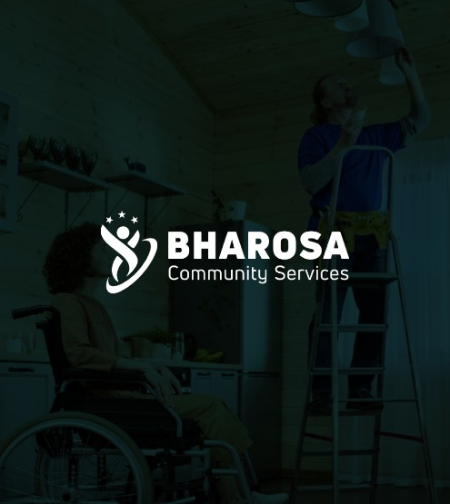

Keeping a home clean, safe, and running smoothly takes constant effort, and for people living with disability it can quickly become overwhelming. Bharosa Community Services provides NDIS-funded assistance with household tasks that takes the pressure off, so you can spend your energy on the people and things that matter most.
NDIS Assistance With Household Tasks in Brisbane & Queensland
As a registered NDIS provider, we support participants across Brisbane, Ipswich, Logan, Toowoomba, Caboolture, the Sunshine Coast, and regional Tasmania. Our support workers help with the everyday tasks that keep your home comfortable, from cleaning and laundry to meal preparation and general tidying, all tailored to your NDIS plan and personal goals.
Every person's needs are different, so we match you with a local support worker who fits your routine, respects your home, and helps you stay as independent as possible.
Ready to get started?
Book a free consultation and we'll build a household support plan around your home, routine and NDIS goals.
What is Assistance With Household Tasks Under the NDIS?
Assistance with Household Tasks, also known as NDIS domestic assistance, is a support that helps participants manage the everyday domestic activities that are hard or unsafe to do on their own because of their disability. It sits within the Assistance with Daily Life category of your Core Supports budget.
The goal is simple: a clean, safe, well-maintained home supports better health, greater independence, and a better quality of life. Instead of chores piling up or becoming a household safety risk, a support worker helps you keep on top of them in a way that suits you. This can be a regular weekly visit, a few hours a fortnight, or a schedule that flexes with your needs.
Whether you search for it as “household tasks,” “domestic assistance,” or “assistance with daily life,” it's the same core idea: practical, disability-related help around the home, delivered on your terms.
What's Included
What Household Tasks Can We Help With?
Our support workers assist with a wide range of everyday tasks. You choose what you need help with, and we build the support around your home and routine.
Cleaning and Home Upkeep
Vacuuming, sweeping, and mopping floors
Dusting and wiping down surfaces
Cleaning kitchens, including benchtops, stovetops, and others
Cleaning and sanitising bathrooms and toilets
Emptying bins and taking out the rubbish
Seasonal or deep “spring” cleaning
Laundry and Linen
Washing, drying, folding, and putting away clothes
Ironing
Changing and making beds
Washing bed linen and towels
Meal Preparation and Kitchen Help
Planning meals around your dietary needs and preferences
Grocery shopping and putting groceries away
Chopping, cooking, and safely storing meals
Washing up and keeping the kitchen clean and hygienic
Organisation and daily routine
Decluttering and organising cupboards, wardrobes, and pantries
Help setting up and maintaining daily and weekly routines
General tidying so your home stays easy to move around
Home and outdoor tasks
Light gardening and keeping paths clear where it improves safety and access
Basic upkeep of household appliances
Help settling into and organising a new home
Not sure what you need?
Need help managing things at home? Our team can help you plan your household support and guide you through your next plan review. Contact us today.
You may be eligible for Assistance with Household Tasks if you are an NDIS participant and your disability makes it difficult or unsafe to manage domestic tasks on your own. This includes people living with:
Physical disabilities and mobility limitations
Neurological conditions
Chronic illness and chronic pain
Mental health conditions
Cognitive or intellectual disabilities
Acquired brain injury
Eligibility comes down to what is reasonable and necessary in relation to your disability. In practice, that means the support must be connected to your disability needs rather than a general preference for domestic help. If household tasks are already funded in your plan under Assistance with Daily Life, you can start using that funding with a provider like Bharosa straight away.
Not sure if it's in your plan? Our team can help you read your plan and, if needed, guide you on how to raise it at your next plan review.
Funding
How Is Household Task Support Funded?
Household task support is funded under the Core Supports budget, in the Assistance with Daily Life category. Core Supports is one of the most flexible parts of an NDIS plan, so funding can often be used across different daily supports as your needs change through the year.
How you access it depends on how your plan is managed
01
Self-managed
You have the most choice and manage payments yourself.
02
NDIA-managed
You'll need to use a registered NDIS provider like Bharosa.
03
Plan-managed
You have flexibility in choosing providers, and your plan manager handles the invoices.
Bharosa is a registered NDIS provider, so we can support participants under any of these management types.
Why It Helps
The Benefits of Household Task Support
More time and energy for what matters. When chores are handled, you have more of your day for family, hobbies, rest, or work.
01
A safer, healthier home
A clean, well-kept home reduces slips, trips, and hygiene-related health risks, which is especially important if mobility or fatigue is a challenge.
02
Greater independence
Support is about working with you, not taking over. Where you want to build skills and confidence, we help you do more for yourself over time.
03
Less stress for you and your family
Reliable support eases the load on family members and carers, so relationships can be about connection rather than chores.
04
Support shaped around you
Your routine, your preferences, your home. We fit in around how you like things done.
Local to You
Areas We Serve
Bharosa provides household task support to NDIS participants across South East Queensland and beyond, including Brisbane, Ipswich, Logan, Toowoomba, Caboolture, and the Sunshine Coast, as well as regional Tasmania. Wherever you are, we aim to match you with a local support worker who knows your area and understands your needs.
We meet NDIS quality and safeguarding standards, so you can access support with confidence, whatever your plan management type.
Person-centred and flexible
Your plan is built around your goals, preferences, and the way you like things done, and it flexes as your needs change.
Respectful, culturally aware care
We support people from all backgrounds and take the time to understand what matters to you.
Clear, no-obligation start
A free consultation, a tailored quote, and no pressure. You decide what's right for you.

How it Works
Getting started with Bharosa is simple.
01
Get in Touch
Connect with our friendly team via phone, email or by submitting an online enquiry form.
02
Create Your Plan
Simply give us a call! We'll discuss your healthcare requirements and explore the services that match your needs.
03
Receive Support
That's all! After we design your personalised plan, our dedicated support team will help you implement it seamlessly.
Free Consultation
Get a Personalised Quote
Every individual's needs are unique, and so is our pricing. Contact us for a free consultation, and we'll provide a tailored quote on your specific support requirements.
What is Assistance with Household Tasks under the NDIS?
Assistance with Household Tasks is an NDIS-funded support that helps participants with day-to-day domestic duties that are difficult or unsafe to manage independently because of their disability. This includes cleaning, laundry, meal preparation, dishwashing, vacuuming, changing bed linen, and basic home organisation. The aim is to help you keep a clean, safe, and comfortable home so you can live as independently as possible.
Who is eligible for NDIS household task support?
NDIS participants whose disability affects their ability to manage household tasks safely or effectively may be eligible. This includes people living with physical disabilities, neurological conditions, chronic illness, mental health conditions, cognitive or intellectual disabilities, and acquired brain injuries. Eligibility is based on what is reasonable and necessary in relation to your disability, meaning the support must be linked to your disability needs rather than simply a preference for domestic help.
How is household task support funded in my NDIS plan?
It's funded under the Core Supports budget, within the Assistance with Daily Life category. This is one of the most flexible support categories, so funds can often be used across different daily supports as your needs change through the year. If you are NDIA-managed you'll need a registered provider like Bharosa; plan-managed and self-managed participants have more flexibility in provider choice.
What household tasks are covered?
Common tasks include cleaning, vacuuming and mopping, bathroom and kitchen cleaning, laundry and ironing, changing bed linen, meal planning and preparation, grocery shopping, dishwashing, decluttering and organising, and light gardening where it improves safety and access. You choose the tasks you need help with.
How often can I receive household task support?
That depends on the funding in your plan and your individual needs. Some participants have support once a week, others more or less often. We build a schedule that keeps your home safe and well-maintained while making the most of your available budget. If your funding doesn't seem to reflect your needs, we can guide you on requesting a plan review.
Can Bharosa provide household support in shared or SIL accommodation?
Yes. We provide household task support across a range of living arrangements, including private homes, rental properties, and Supported Independent Living (SIL) settings. Whether you live alone, with family, or with other participants, our support workers provide respectful, tailored assistance that suits your home.
Is household task support the same as domestic assistance?
They're closely related terms. "Domestic assistance" is often used to describe the everyday cleaning and home-upkeep side of household tasks. Under the NDIS, both sit within Assistance with Daily Life and cover the kinds of tasks listed above.
How do I get started with Bharosa?
Getting started is simple. Call us on 1800 862 427, email us, or complete the enquiry form on this page. Our friendly team will discuss your needs, review your NDIS plan funding, and put together a personalised schedule shaped entirely around you.